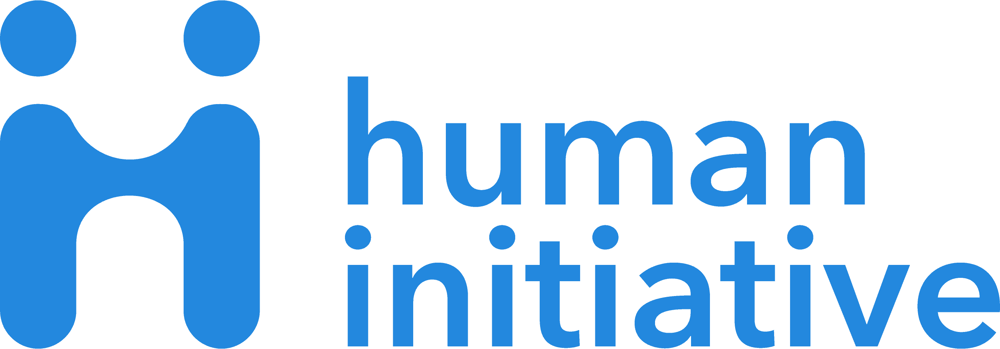
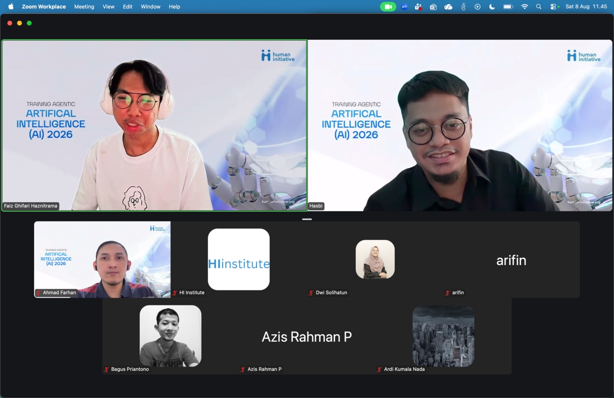
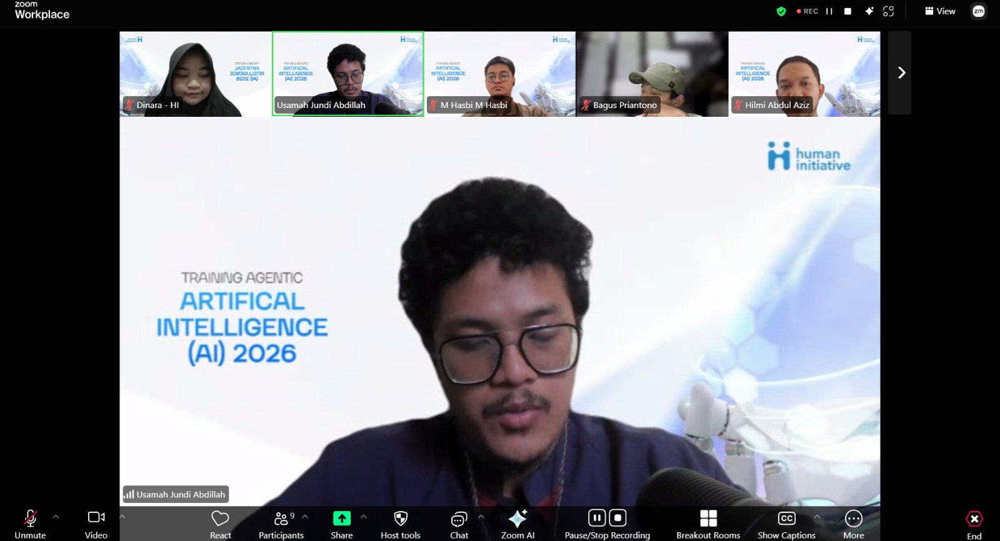
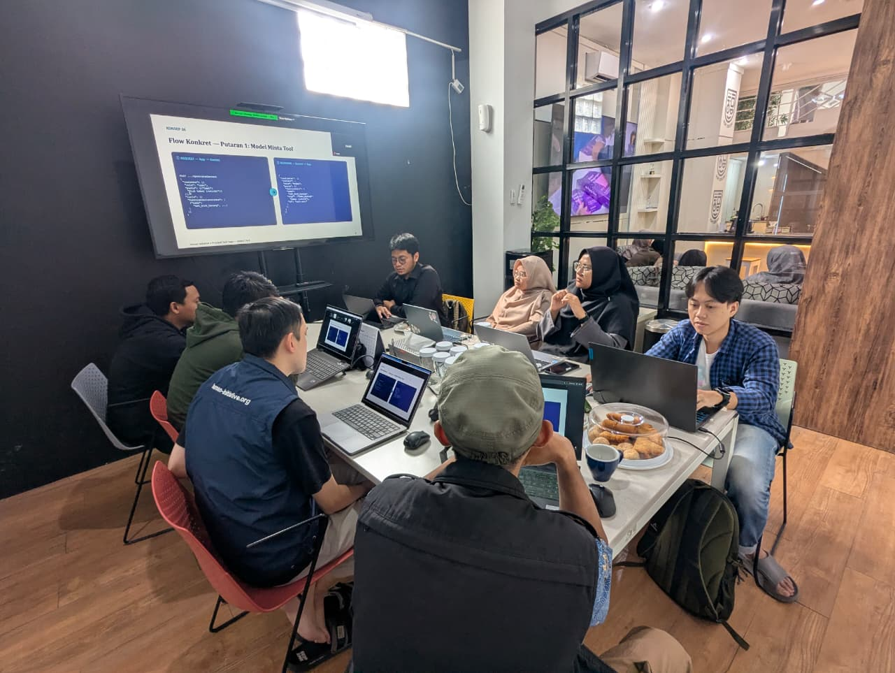
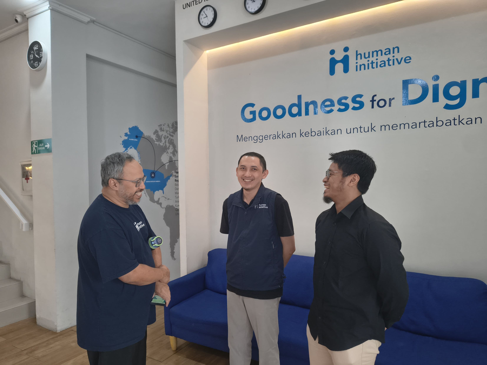

Principal Tech Sage menyelenggarakan pelatihan Agentic AI untuk tim Human Initiative — dari konsep dasar agentic loop hingga praktik langsung membangun sistem agent, disampaikan dalam dua format: kelas daring dan workshop tatap muka.
Human Initiative adalah organisasi kemanusiaan yang bergerak di bidang filantropi dan pemberdayaan, dengan misi "Goodness for Dignity — menggerakkan kebaikan untuk memartabatkan kemanusiaan." Jangkauan program mereka membentang dari nasional hingga lintas negara, didukung oleh tim yang terus mengasah kapasitas di berbagai bidang, termasuk teknologi.
Untuk memperkuat pemahaman tim internal terhadap perkembangan AI, khususnya sistem agentic yang kini banyak diadopsi di berbagai industri, Human Initiative menggandeng Principal Tech Sage sebagai mitra pelatihan.



